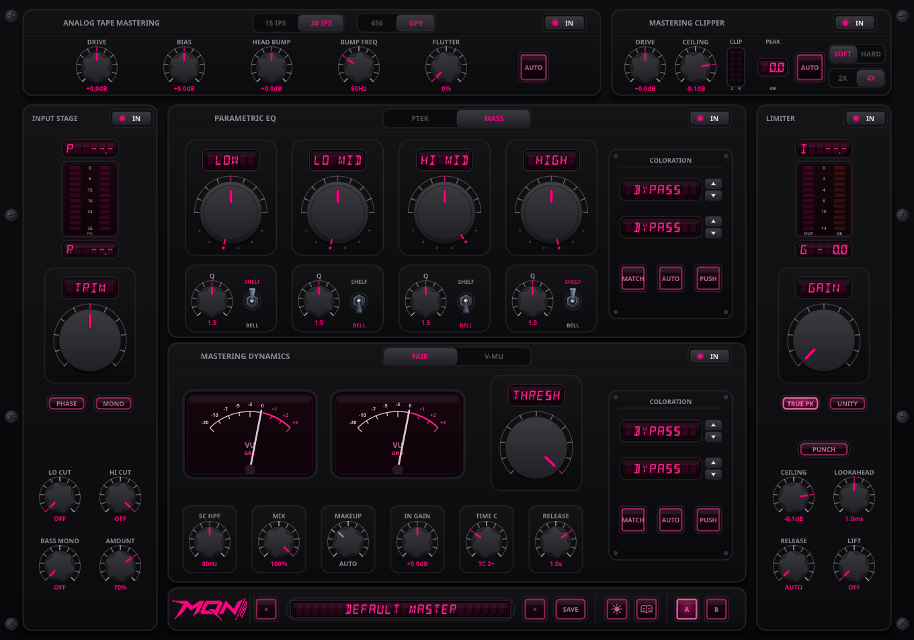
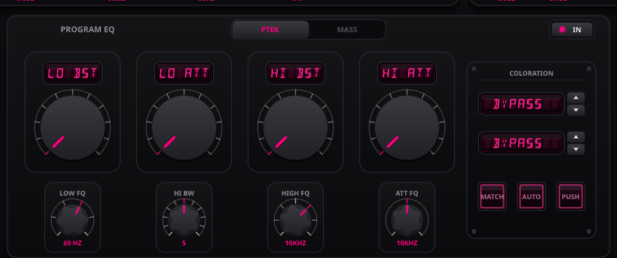
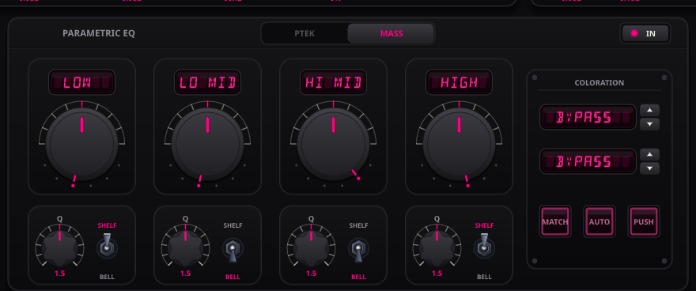
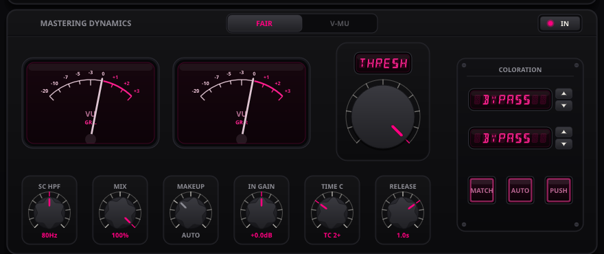
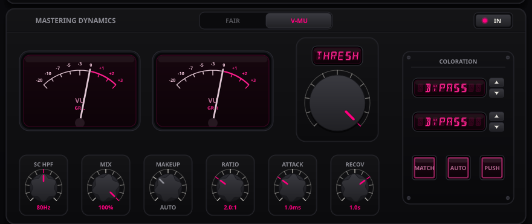
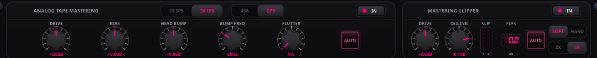
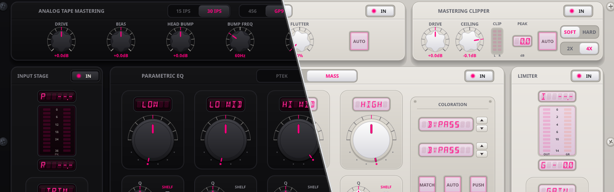

01 Console Architecture & Serial Signal Flow
Masteraid is a modular mastering console that brings together vacuum-tube and discrete transformer models, tape machine emulation, two switchable equalizers, two switchable variable-mu compressors, oversampled clipping, and a true-peak limiter in a 64-bit floating-point processing chain.

Figure 1.1 — Masteraid Full Rack Console Interface (Hardware Dark Mode)
The signal flows in serial mastering order: input gain staging and corrective filtering come first, followed by equalization and compression, then tape saturation, peak clipping, and final true-peak limiting.
Masteraid Serial Mastering Signal Path
INPUT WING
Trim • Ø • PPM
→
FILTERS
12/24 dB • Mono
→
MASTER EQ
PTEK / MASS
→
DYNAMICS
FAIR / V-MU
→
ATR-102 TAPE
15/30 IPS • Dyn HF
→
CLIPPER
4x OS • Soft/Hard
→
LIMITER
True Peak • LUFS
Why this specific order matters: Equalizing before dynamics ensures the compressor sidechain reacts to the intended tonal balance rather than uncontrolled low-frequency peaks. Magnetic tape saturation adds progressive non-linear compression, and the clipper catches fast transient spikes so the limiter does not have to work as hard.
02 Left Wing: Input Stage & Master Filtering Controls
The left wing handles gain staging, bandwidth preparation, and stereo mono-compatibility auditing prior to downstream equalization, tape saturation, and dynamic control:
03 Parametric Equalizer: PTEK Tube vs MASS Parametric
The equalizer stage features two distinct circuit topologies, selectable via the illuminated top model selector:
Model Selection: Switch between PTEK and MASS at any time. Filter states crossfade smoothly without clicks.
PTEK Mode: Passive Program Tube Equalizer
PTEK models a passive LC inductor-capacitor filter network with vacuum tube makeup amplification based on the classic EQP-1A architecture:

Figure 3.1 — PTEK Mode: Passive LC Filter Topology & Program Tube Gain Makeup
- Low-End Interaction (Simultaneous Boost & Attenuation): Because the boost and attenuation circuits use different corner frequencies and slopes, applying boost and cut together creates a resonant low-frequency shelf with a gentle dip near 250–400 Hz, clearing muddy lower-mid buildup while tightening the sub-bass.
- Low Frequency Selectors: Stepped selection at 20, 30, 40, 60, 100, and 150 Hz with continuous Boost (0..10 = +13.5 dB) and Attenuate (0..10 = -17.5 dB) controls.
- High Frequency Boost & Attenuation: High boost provides 7 selectable center frequencies (3k, 4k, 5k, 8k, 10k, 12k, 16k Hz) and variable bandwidth (Q: 0 to 10). A separate high-frequency shelf attenuator operates at 5k, 10k, or 20k Hz (0 to -16.0 dB).
MASS Mode: Four-Band Parallel Parametric Mastering Equalizer
MASS is a 4-band parallel parametric mastering equalizer. Unlike serial biquad designs where phase shifts accumulate stage by stage, MASS uses a parallel topology where all four bands process the input independently and sum with the dry signal, maintaining consistent transient response and stereo correlation.

Figure 3.2 — MASS Mode: Four-Band Parallel Inductor Mastering Equalizer with Proportional-Q
| Band |
Stepped Frequencies |
Gain Range |
Q Bandwidth |
Mastering Focus & Application |
| LOW |
33, 47, 68, 100, 150, 220 Hz |
-9.0 to +9.0 dB |
0.4 to 5.0 |
Sub-bass foundation, kick drum weighting, and infrasonic cleanup. |
| LO MID (LMF) |
150, 220, 330, 470, 680, 1k Hz |
-9.0 to +9.0 dB |
0.4 to 5.0 |
Lower-midrange density, snare body, acoustic instrument resonance. |
| HI MID (HMF) |
680, 1k, 1.5k, 2.2k, 3.3k, 4.7k Hz |
-9.0 to +9.0 dB |
0.4 to 5.0 |
Vocal articulation, snare attack, presence, and sibilance control. |
| HIGH (HF) |
3.3k, 4.7k, 6.8k, 10k, 15k, 20k Hz |
-9.0 to +9.0 dB |
0.4 to 5.0 |
High-frequency air, cymbal extension, and top-end opening. |
Proportional-Q Characteristic Curve
Filter bandwidth adjusts proportionally to gain. Subtle adjustments (±0.5 to ±2.0 dB) stay broad for gentle tonal shaping. As boost or cut increases toward ±9.0 dB, bandwidth progressively narrows for targeted correction without altering neighboring frequencies.
Hardware Controls & Band Bypass
- Frequency Collar: 6-position stepped selector locking onto inductor frequency taps.
- Gain Rotor: ±9.0 dB continuous gain control with center detent at 0.0 dB.
- Q Trim Knob: Adjusts filter bandwidth from broad (0.4) to narrow (5.0).
- Shelf / Bell Toggle: Switches between SHELF (UP) and BELL curve (DOWN). In Shelf mode, the Q knob sets slope steepness.
- Band Bypass: Click the frequency/gain readout above each band to toggle it ON or OFF.
04 Mastering Dynamics: FAIR vs V-MU
The dynamics section provides variable-mu compression with program-dependent attack and recovery curves, providing cohesive program leveling across stereo stems.
FAIR Mode: Vintage Fairchild 670 Variable-Mu
FAIR mode emulates a push-pull variable-mu gain reduction circuit with feedback detection. It incorporates six standardized time constant presets (TC 1 through TC 6) with multi-slope recovery on settings 5 and 6, and adaptive release on low frequencies to prevent waveform distortion:

Figure 4.1 — FAIR Mode: Push-Pull Variable-Mu Topology with Calibrated Time Constants
| Time Constant |
Attack Time |
Recovery (Release) Characteristic |
Recommended Application |
| TC 1 |
0.2 ms |
0.3 seconds |
Fast transient control, aggressive drum and rhythmic punch. |
| TC 2 |
0.2 ms |
0.8 seconds |
Standard pop and rock bus leveling; general program cohesion. |
| TC 3 |
0.4 ms |
2.0 seconds |
Slower, flowing compression for acoustic, jazz, and vocal arrangements. |
| TC 4 |
0.8 ms |
5.0 seconds |
Macro-dynamic leveling for classical and wide-dynamic mixes. |
| TC 5 (Auto) |
0.4 ms |
Dual-stage automatic: 2.0s for short peaks, 10.0s for sustained signals. |
Dynamic material with high-energy sections; prevents pumping. |
| TC 6 (Auto) |
0.2 ms |
Tri-stage automatic: 0.8s fast peaks, 3.0s medium, 25.0s sustained passage. |
Full album mastering; transparent program-dependent leveling. |
V-MU Mode: Modern Variable-Mu Mastering Compressor
V-MU mode provides independent stepped control over envelope timing, compression ratio, and sidechain frequency weighting:

Figure 4.2 — V-MU Mode: Stepped Envelope Timing, SC HPF & Parallel Wet/Dry Mix
- Stepped Timing & Ratio: Stepped Attack (Fast, M-Fast, Med, M-Slow, Slow), Recovery (Fast, Med, Slow, Auto), and Compress / Limit mode switch.
- Sidechain Highpass Filter (SC HPF): Stepped 80 Hz / 100 Hz filter prevents heavy low frequencies from driving unnecessary gain reduction.
- Parallel MIX & Automatic Makeup: 0% to 100% wet/dry blend for parallel compression, plus AUTO makeup gain compensation.
- Stereo Gain Reduction Meters: Left and right channel gain reduction displays responding with standard 300 ms integration time.
05 Analog Coloration Cassettes
Both the EQ and Dynamics sections feature an independent Hardware Coloration Cassette on their output stages, modeling discrete active amplifier topologies and output transformer magnetic saturation:
Coloration Controls & Operation (PUSH, HOLD AUTO & LEARN):
- PUSH (Drive Tiers): Direct click cycles between three calibrated saturation stages: Subtle (nominal operating point), Pushed (+4.5 dB core drive with rich harmonic density), and Smashed (+11.5 dB extreme drive pushing tubes and transformers into aggressive non-linear saturation).
- AUTO (Level Neutrality): Click to toggle automatic level compensation ON or OFF using the latched trim values.
- Hold AUTO (Learn Mode): Press and hold the AUTO button while playing program material. Masteraid runs three background shadow stages to measure the exact power ratio across Subtle, Pushed, and Smashed tiers simultaneously. The resulting level trims are permanently latched per amplifier/transformer pairing.
- Double-Click AUTO: Clears and resets the stored learned calibration trim for the current amplifier and transformer model pairing.
- MATCH: Instantly locks the period-correct active amplifier and transformer topologies associated with the active EQ or compressor circuit.
06 Top Deck: ATR-102 Mastering Magnetic Tape Machine
The tape stage models 1/2-inch two-track magnetic mastering tape machines, including magnetic oxide saturation, ultrasonic record bias, low-frequency head contour resonance, and transport wow/flutter:

Figure 6.1 — Masteraid Top Deck: ATR-102 Tape Physics & Precision 4x Linear Clipper
- Dynamic High-Frequency Compander: Implements high-frequency pre-emphasis conditioning prior to tape saturation and complementary decoding on playback, reducing ultrasonic intermodulation and preventing high-frequency loss during heavy saturation.
- 15 IPS vs 30 IPS Tape Speeds: 15 IPS (Inches Per Second) emphasizes lower-frequency head bump resonance and low-mid tape compression; 30 IPS delivers extended high-frequency linearity beyond 28 kHz with lower modulation noise.
- 456 vs GP9 Tape Formulations: 456 (+6 dB operating level) produces standard magnetic tape saturation that rounds peak transients. GP9 (+9 dB operating level) provides higher headroom and lower harmonic distortion.
- DRIVE (-6 to +12 dB) & BIAS (-10 to +10 dB): Drive sets input signal level relative to the magnetic tape saturation curve. Bias adjusts the AC ultrasonic record bias current and high-frequency slew rate damping.
- HEAD BUMP (0 to 6 dB) & BUMP FREQ (30 to 150 Hz): Models the physical repro head contour effect. Adjusts the low-frequency resonant peak frequency (tunable from 30 to 150 Hz) with an active highpass filter to control sub-audible DC buildup.
- FLUTTER (0.0% to 100.0%): Simulates mechanical transport irregularities and capstan flutter using uncorrelated stereo modulation.
- AUTO (Level Neutrality): Level-matched saturation compensation counterbalancing input drive in real time to facilitate objective timbre evaluation.
08 Right Wing: Brickwall Limiter & Broadcast Metering
The final stage combines a lookahead true-peak brickwall limiter with inter-sample peak detection and ITU-R BS.1770-4 / EBU R128 loudness metering:
09 Preset Management & System Directory Paths
Masteraid stores presets as standalone .mqnpreset files in the standard operating system documents directory for instant cross-platform exchange:
Standard User Preset Locations:
- Windows:
%USERPROFILE%\Documents\MQNdsp\Masteraid\Presets\
- macOS:
~/Documents/MQNdsp/Masteraid/Presets/
- Linux:
~/Documents/MQNdsp/Masteraid/Presets/ (or $XDG_DOCUMENTS_DIR/MQNdsp/Masteraid/Presets/)
Click the center preset display to browse the preset drawer. Click [ OPEN FOLDER ] to open the OS file manager directly. Presets placed in this directory become available immediately without restarting the host DAW.
10 Dual Themes, A/B Comparison & Shortcuts Reference

Figure 10.1 — Dual Visual Schemes: Dark Studio Finish (Left) vs Light Smoked-Glass Aesthetic (Right)
Visual Themes: Click ☀ (Sun) or ☾ (Moon) in the top header to toggle between Dark Mode (designed for low-light control rooms) and Light Mode (high-contrast daylight aesthetic).
A/B Matrix: The lower-right illuminated A and B buttons allow instant auditioning between two independent mastering configurations with zero audio interruption.
Mouse & Keyboard Shortcuts Reference
| Action / Shortcut |
Target Control |
Operational Behavior |
| Ctrl + Drag (Cmd on macOS) |
Stepped or Continuous Knobs |
Fine Precision: Bypasses stepped detents for ultra-smooth fine-tuning (0.0022 precision). |
| Alt + Click (Option on macOS) |
Any Knob, Slider, or Switch |
Reset Default: Restores the selected parameter to its calibrated default mastering value. |
| Double-Click |
Any Knob, Slider, or Switch |
Quick Reset: Alternate one-handed shortcut to return any control to default. |
| Vertical Drag |
Stepped Knobs & Selectors |
Detent Snap: Snaps through calibrated inductor taps, Q bandwidths, or time constants. |
| Mouse Wheel |
Any Knob or Slider |
Fine Step: Increments or decrements detents and values with tactile resolution. |
| Direct Click |
Buttons & Model Selectors |
Toggles bypass states, switches circuit models (PTEK/MASS, FAIR/V-MU), or cycles saturation tiers. |
| Alt + Click on LUFS |
LUFS Integrated / LRA Box |
Reset Loudness: Resets EBU R128 integrated LUFS and LRA calculations for a new pass. |
| Book Icon (📖) Button |
Top Navigation Header |
Open Manual: Launches this technical reference guide in your system PDF viewer. |